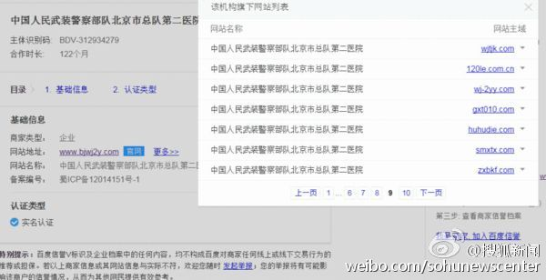

骂完百度，骂莆田，骂医生，骂的对象都是这个罪恶链条上相对弱势的。指出更关键的作恶者，不是为谁洗地。@急诊科女超人于莺:那些说我拿了百度钱为百度洗地的才是真正混淆视听。灭了百度一家，只要利益链条还存在，就会有千度，万度公司出现。魏泽西还提到过看了央视的报道，怎么没人把矛头指向央视，前总后勤部，卫计委，无良医院，无良医生？就现在，还有多少家民营公立医院还在用这种治疗方法？不从根源解决，永远在补窟窿。
医生这么理性的话，很多患者是听不进去的。 //@友悦:本来就是不治之症，任何治疗都难保证生存，只要治疗前双方认可就无话可说 //@Observer__W:@友悦 //@澎湃新闻:“很多病人家里筹钱治病都是东拼西凑、倾家荡产的，很不容易！有全国各地来的病人，都是想活命，@澎湃新闻:【母亲：魏则西发帖不是为了钱，只是不想让更多人上当】在知乎帖子中， 魏则西对北京武警二院、百度以及DC-CIK细胞免疫治疗技术提出了强烈批评。 魏则西母亲告诉澎湃，则西之所以写下这些文字，不是为了找谁麻烦，不是为了要钱，只是不想让更多人上当。这个技术已经淘汰了，为什么还在推广？母亲：魏则西发帖不是为找医院麻烦，只是不想让更多人上当
这事儿能发酵，腾讯下的微信，及阿里下的微博，功不可没。现在其它互联网公司开始加入围剿阵营。@搜狐新闻:【问问百度】魏则西事件，小狐也进行了一些调查，发现光是涉事医院科室域名背后就好多花样，整理了几个问题想问问@百度推广 ：“武警北京二院”为什么在百度投放了65个网站？“武警北京二院”为什么投放了上海的医院网站？“武警北京二院”的ICP备案信息为什么是“葫芦岛订房网”？“武警北京二院”的域名所有者为什么是莆田系的公司？你们承诺的在百度的加V网站被骗全额赔偿是真的吗？详见搜狐新闻调查 起底调查：引发公愤的医院科室背后的莆田系身影
回复@吴月超律师:人性就是柿子捡软的捏//@吴月超律师:围剿百度围剿莆田，但无人敢剑指武警与部队医院，更无人敢说医改拖沓无效以及医疗制度与互联网管制。//@Ada李力:这事儿能发酵，腾讯下的微信，及阿里下的微博，功不可没。现在其它互联网公司开始加入围剿阵营。@搜狐新闻:【问问百度】魏则西事件，小狐也进行了一些调查，发现光是涉事医院科室域名背后就好多花样，整理了几个问题想问问@百度推广 ：“武警北京二院”为什么在百度投放了65个网站？“武警北京二院”为什么投放了上海的医院网站？“武警北京二院”的ICP备案信息为什么是“葫芦岛订房网”？“武警北京二院”的域名所有者为什么是莆田系的公司？你们承诺的在百度的加V网站被骗全额赔偿是真的吗？详见搜狐新闻调查 起底调查：引发公愤的医院科室背后的莆田系身影